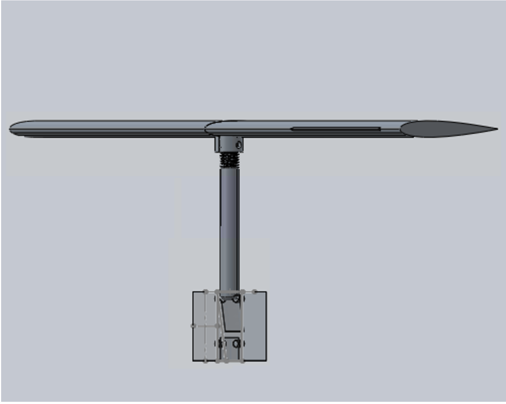
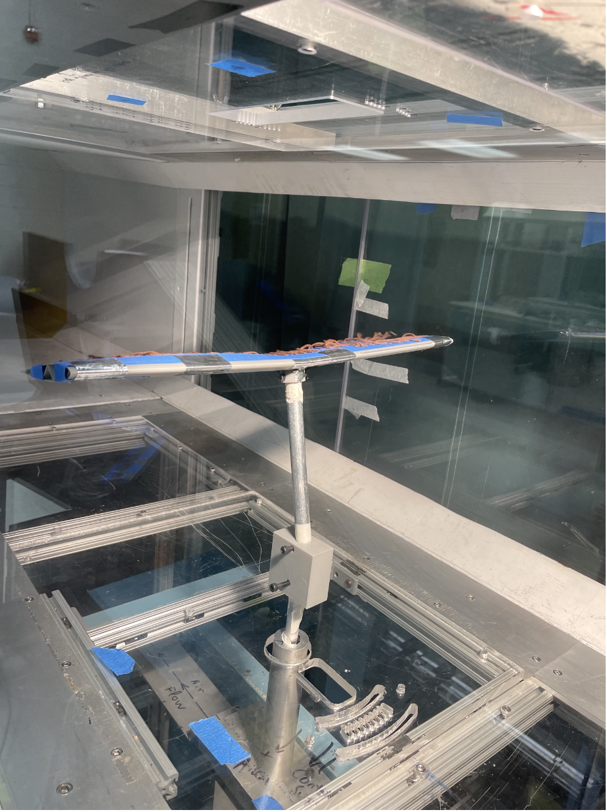
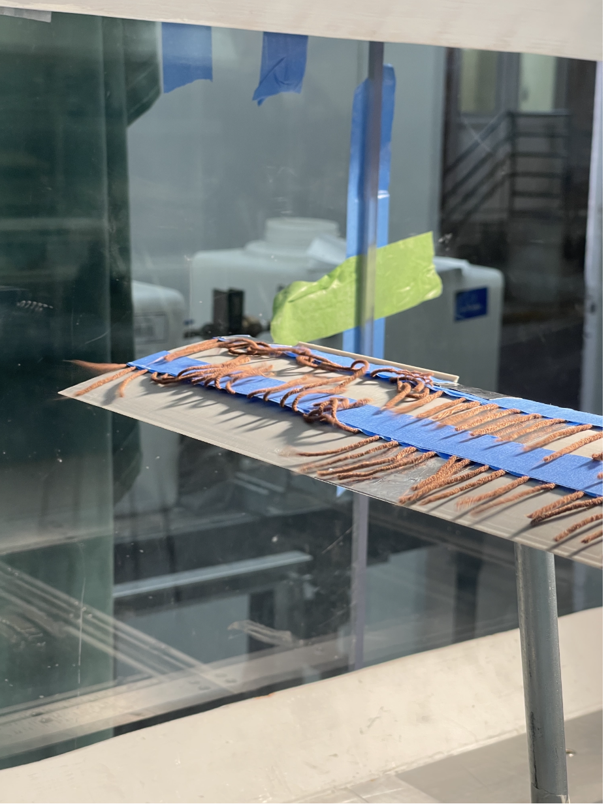
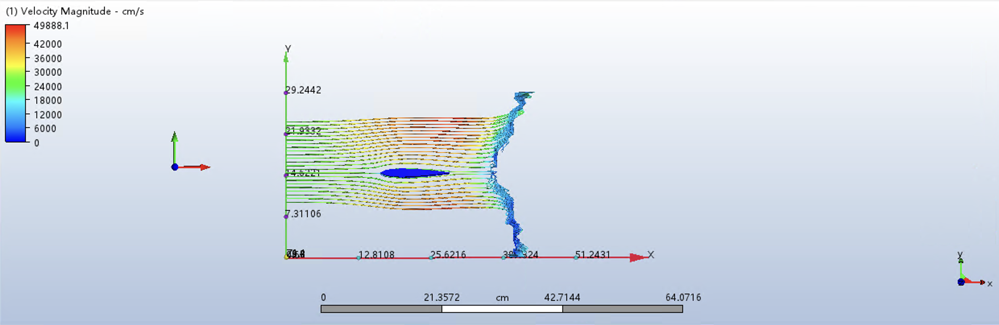
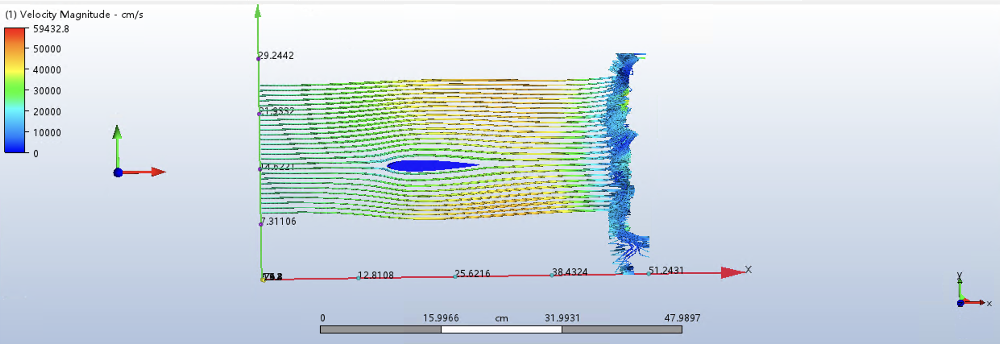
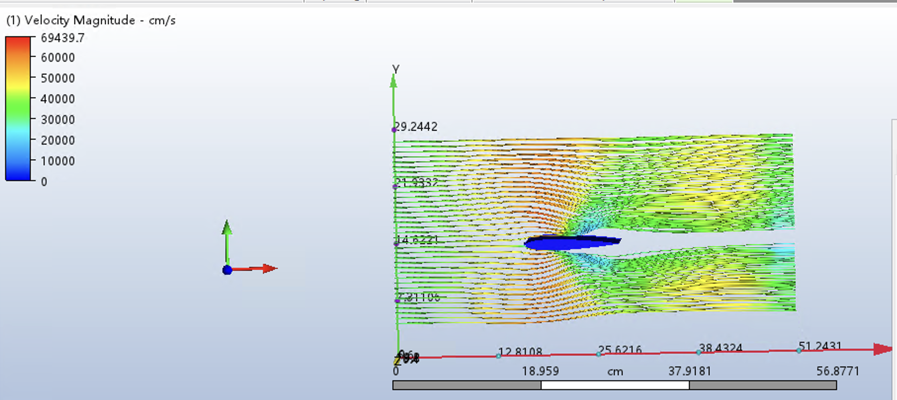
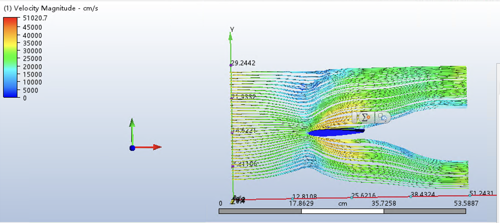
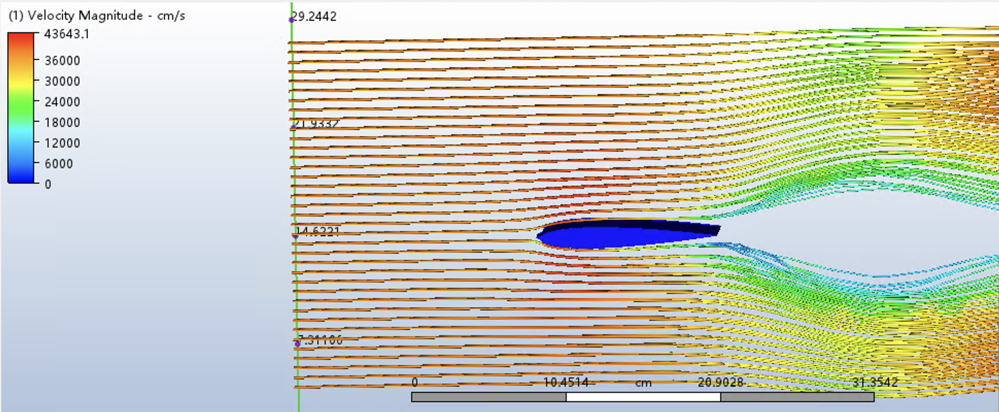
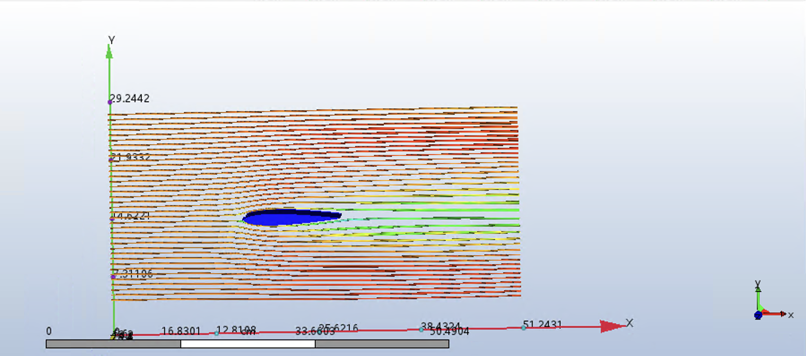

Overview
Stall strips are passive flow-control devices mounted near the leading edge of an airfoil to deliberately modify stall behavior. Rather than allowing stall to develop suddenly and unpredictably, a correctly positioned strip forces early, controlled boundary-layer separation at a defined location — typically the wing root — preserving aileron effectiveness and giving the pilot recognizable warning well before full stall.
The motivation for this project came directly from Private Pilot License (PPL) flight training. Observing that training aircraft consistently stall root-first, and learning that stall strips are the mechanism responsible, raised a concrete engineering question: how sensitive is this behavior to chordwise strip position, and what aerodynamic penalties does it introduce? This investigation answers that question experimentally through wind tunnel testing of a NACA 0012 airfoil, supplemented by 2D CFD analysis across three strip positions spanning the leading-edge region.
Objectives
The investigation addressed two primary engineering objectives:
- Determine the optimal chordwise position of a triangular stall strip on a NACA 0012 airfoil — maximizing stall control while minimizing aerodynamic penalty.
- Quantify the effect of strip placement on CL,max, critical angle of attack, drag coefficient, and post-stall lift curve behavior across tested configurations.
Three positions were tested: at the leading-edge apex (0% chord), 1.5% chord aft, and 3% chord aft, providing a systematic sweep through the region where strip effectiveness is expected to be highest.
Experimental Setup
Airfoil Model & Strip Geometry
A 3D-printed NACA 0012 airfoil (chord 120 mm, span 480 mm, aspect ratio 4:1) was used throughout testing. The higher aspect ratio compared to early design iterations was intentional: it amplifies measured lift and drag forces and reduces wind tunnel wall-interference effects. The triangular stall strip measured 23 mm base × 28 mm height, spanned 108 mm along the wing, and was mounted 24 mm from the root edge. Three chordwise positions were evaluated:
| Configuration | Chordwise Location (%c) | Distance from LE (mm) | Chordwise Position (mm) |
|---|---|---|---|
| POS-1 (LE apex) | 0.0% | 0 | 0 |
| POS-2 | 1.5% | 1.8 | 118.2 |
| POS-3 | 3.0% | 3.6 | 116.4 |
Table 1: Stall strip chordwise positions evaluated
Mounting System Development
Developing a reliable mounting system was one of the most significant engineering challenges of the project. Three hardware generations were iterated before arriving at a configuration capable of accurate aerodynamic measurement.
- Initial cantilever design: A single-arm support attached directly to the airfoil. Simple to fabricate, but aerodynamic loading caused structural deflection and vibration that corrupted both AOA control and force readings.
- Intermediate enclosed design: Improved alignment and rigidity, but still limited by a 3D-printed PLA support rod — the airfoil-rod joint remained a source of compliance under load.
- Final configuration: The airfoil base was threaded and mated to a stainless-steel stud rod, providing a rigid connection along a well-defined central rotational axis. Symmetric dual mounts eliminated measurement bias; an enclosed housing maintained consistent alignment across test runs.
Additional refinements included replacing the mounting rod material with carbon steel to prevent flutter, reducing airfoil infill and wall thickness to lower inertial effects near stall, and adopting a zero-lift reference procedure — rotating the airfoil until force balance reads zero lift, then incrementing AOA from that baseline — to remove systematic offset from manufacturing tolerances and mounting misalignment.

Final mounting configuration — threaded stainless-steel stud rod, central rotational axis, and enclosed force balance housing

NACA 0012 airfoil installed in the Duke wind tunnel test section with wool tufts applied to the upper surface
Instrumentation
- Three-axis force balance measuring lift and drag at each AOA increment; pre-calibrated against known applied weights to characterize measurement uncertainty before tunnel operation
- Freestream velocity 15 m/s, Reynolds number Re ≈ 100,000; AOA swept from 0° to 14° in uniform increments
- Wool tufts across the upper surface for qualitative flow visualization — providing direct evidence of separation onset location, reversed flow regions, and their extent as AOA increased
Results
Baseline Aerodynamic Performance
The clean NACA 0012 airfoil reached a maximum lift coefficient of approximately 2.15 at 14° AOA, with lift increasing approximately linearly throughout the tested range. This provided the reference against which all strip configurations were benchmarked.
(−5.7% vs baseline)
(−3.0% vs baseline)
(−17.7% vs baseline)
Lift Coefficient Comparison
| AOA (°) | Baseline CL | Strip 0% CL | Strip 1.5% CL | Strip 3% CL |
|---|---|---|---|---|
| 0 | 0.000 | 0.000 | 0.000 | 0.000 |
| 2 | 0.507 | 0.507 | 0.507 | 0.558 |
| 4 | 0.937 | 0.949 | 0.975 | 0.987 |
| 6 | 1.342 | 1.304 | 1.342 | 1.216 |
| 8 | 1.608 | 1.570 | 1.646 | 1.368 |
| 10 | 1.887 | 1.748 | 1.887 | 1.558 |
| 12 | 1.976 | 1.824 | 1.976 | 1.799 |
| 14 | 2.153 | 2.027 | 2.089 | 1.773 |
Table 2: Lift coefficient vs. angle of attack for all configurations at Re ≈ 100,000
Drag and Polar Curve Trends
Moving the strip aft from 0% to 3% chord consistently increased drag coefficient (CD) across all angles of attack. The 3% chord strip produced the highest CD values at every data point, while the 0% and 1.5% configurations remained much closer to baseline. Polar curve analysis (CL vs CD) confirms this: baseline and the 0%/1.5% cases maintain a tighter performance envelope, while the 3% case diverges sharply at moderate-to-high AOA — indicative of larger separated regions generating additional pressure drag.
Flow Visualization
Tuft observations directly corroborated the force data. As strip position moved aft, tufts exhibited unsteadiness and reversed flow at progressively lower angles of attack, with the 3% chord configuration showing visibly greater disturbance across the upper surface at moderate AOA. This is physically consistent with the strip disrupting an already-developing boundary layer rather than tripping it cleanly at the stagnation region.

Wool tuft visualization on the upper surface near stall — curling and reversed tufts indicate separated flow regions; the spanwise and chordwise extent of separation varied measurably with strip position
Discussion
Why Leading-Edge Placement Is Optimal
The fundamental mechanism of a stall strip is interaction with the boundary layer before it fully develops. Placed at the leading-edge apex (0% chord), the strip engages the incoming flow at the stagnation point — tripping transition and controlling separation onset before the boundary layer has momentum to resist disturbance. The result is a smoother, more progressive lift curve through stall.
Moving to 3% chord changes this interaction fundamentally. The strip now encounters an established boundary layer, disrupting it at a less favorable location and producing a larger separated region downstream. This explains the data: more drag, reduced lift, and no compensating benefit in stall control quality. The 1.5% position splits the difference effectively — still within the high-sensitivity leading-edge region, but with slightly reduced abruptness of stall compared to the 0% case.
Drag Measurement Caveat
Absolute drag coefficients in this study are elevated relative to published NACA 0012 reference data. The mounting rod and hardware contributed parasitic form drag that cannot be decoupled from airfoil drag without a separate tare measurement. However, this systematic offset is consistent across all configurations — comparative CD trends between strip positions are unaffected, and the performance conclusions remain valid.
Connection to Aviation Practice
These results align directly with FAA guidance, which specifies stall strips should be located near the leading edge to initiate predictable root-first stall, preserving aileron authority through and beyond stall onset. The experimental data confirms the aerodynamic basis for this: leading-edge placement is not merely operationally conventional — it is the position where the strip most efficiently modifies boundary layer development with the smallest lift penalty.
Learnings & Engineering Takeaways
Experimental Design
- Mounting rigidity is not a secondary concern — compliance at the airfoil-rod interface directly corrupts AOA control and force measurement. Iterating from printed PLA to a threaded steel stud was the single most impactful improvement to data quality.
- Zero-lift referencing before each run eliminates systematic error from installation tolerances. Relying on geometric angle settings alone would have introduced uncorrectable offset in all lift curves.
- Pre-test force balance calibration against known loads is essential: it establishes measurement uncertainty before any data is collected, rather than discovering calibration issues in post-processing.
Aerodynamics
- The stagnation point is the optimal strip location: interaction with an undeveloped boundary layer enables controlled transition; aft placement disrupts an already-developing layer with less control authority and more drag penalty.
- The performance-safety trade-off is real but manageable. A leading-edge strip reduced CL,max by roughly 6% relative to the clean airfoil — a modest cost for meaningful improvement in stall predictability. The 3% chord position, by comparison, sacrificed 18% of CL,max for no additional safety benefit.
- Wool tuft visualization is a low-cost, high-information tool. It provided direct physical evidence of the mechanisms implied by force data, confirming that the 3% chord strip generated larger and earlier separation zones.
Project Process
- Grounding the research question in a real flight training observation produced a more focused investigation than a purely theoretical starting point would have. Motivation shaped methodology.
- Mounting system development consumed significant project time but was not wasted — shortcutting hardware iteration would have produced data too noisy to interpret. Infrastructure investment is part of experimental research.
- CFD and wind tunnel testing were complementary: CFD guided initial strip position selection and provided flow-field context; experiment validated the trends and revealed the drag offset introduced by the physical setup.
Future Directions
- Unsteady and full 3D CFD analysis to capture spanwise flow effects not resolved by the 2D model
- Evaluation of stall strips fabricated from flexible materials (e.g., TPU) to assess whether strip compliance can further soften post-stall behavior
- Separate drag tare measurements to isolate airfoil CD from mounting hardware parasitic drag
- Extension to higher Reynolds numbers and compressible flow conditions for applicability beyond low-speed GA aircraft
Technologies & Tools
The following is a separate investigation completed for ME 536 (Compressible Fluid Flow). It extends the stall strip concept into the transonic regime using CFD, and is presented here as a companion study to the low-speed wind tunnel work above.
Transonic CFD Investigation — ME 536
The low-speed wind tunnel work above characterizes stall strip behavior at Re ≈ 100,000 in the incompressible regime. This companion study examines what happens when the same leading-edge geometry is introduced into compressible flow — specifically, whether stall strips can act as passive devices to mitigate shock-induced separation in the transonic regime (M = 0.7–1.2).
In transonic flow, local supersonic pockets form on the airfoil upper surface and terminate in shock waves. These shocks interact with the boundary layer, causing shock-induced separation — a fundamentally different failure mode from the low-speed stall addressed by the experimental work. The hypothesis was that a leading-edge stall strip, by thickening the boundary layer upstream of the shock, might soften the shock–boundary layer interaction and reduce abrupt lift loss.
Methodology
A NACA 0012 airfoil with a triangular leading-edge stall strip was modeled in CFD at six freestream Mach numbers: 0.7, 0.8, 0.9, 1.0, 1.1, and 1.2. Steady-state compressible RANS simulations were run at zero angle of attack, with key outputs including velocity magnitude contours, shock location, and lift and drag coefficients. XFOIL was used for baseline subsonic reference but was not applied above M ≈ 0.7 due to its known inability to resolve shock formation.
Results — Aerodynamic Coefficients
The drag coefficient rose gradually from CD = 0.087 at M = 0.7 to 0.094 at M = 0.9, then spiked sharply to CD = 0.290 at M = 1.0 — the transonic drag divergence signature of shock wave formation. Beyond M = 1.0, CD dropped to 0.051 at M = 1.1 and 0.025 at M = 1.2, consistent with flow reorganization into the supersonic regime. The lift coefficient showed non-zero values (CL ≈ 0.19–0.23) in the subsonic range at zero AOA, which is physically unrealistic for a symmetric airfoil — attributed to numerical asymmetry from mesh imbalance or slight geometric misalignment rather than aerodynamic lift generation. At M = 1.0 lift dropped sharply (CL = 0.029) as the shock reduced the upper surface suction peak, and approached zero at M = 1.2 as the flow became shock-dominated.
| Mach | Velocity (m/s) | Drag (N) | Lift (N) | CD | CL |
|---|---|---|---|---|---|
| 0.7 | 238 | 151.46 | 368.01 | 0.087 | 0.212 |
| 0.8 | 272 | 265.35 | 644.66 | 0.093 | 0.226 |
| 0.9 | 306 | 411.62 | 824.92 | 0.094 | 0.189 |
| 1.0 | 340 | 1286.03 | 129.49 | 0.290 | 0.029 |
| 1.1 | 374 | 354.67 | 383.86 | 0.051 | 0.055 |
| 1.2 | 408 | 219.14 | 15.95 | 0.025 | 0.002 |
Table: Aerodynamic coefficients across the transonic Mach sweep, NACA 0012 with leading-edge stall strip at 0° AOA
CFD Flow Field Visualization
Velocity magnitude contours across the six Mach conditions show the progressive development of shock structures on the airfoil upper surface. At M = 0.7 the flow is largely subsonic with mild distortion from the strip. By M = 0.8 a localized deceleration zone indicates a weak shock onset. At M = 0.9 a distinct shock is visible on the upper surface, and at M = 1.0 the shock is pronounced with significant boundary layer thickening and wake separation. At M = 1.1 and 1.2 the shock structure dominates and the separated wake grows considerably.

M = 0.7 — largely subsonic flow, mild leading-edge disturbance from stall strip, no shock present

M = 0.8 — onset of compressibility effects; localized deceleration zone indicates emerging weak shock

M = 0.9 — distinct shock visible on upper surface; flow separates downstream with increased boundary layer thickness

M = 1.0 — strong shock with pronounced low-velocity region; CD spikes to 0.290; large separated wake

M = 1.1 — fully transonic to supersonic; well-defined shock structure, expanded separation zone, steep velocity gradients

M = 1.2 — strong compressibility effects; extended low-velocity wake, shock-induced separation dominates the flow field
Discussion
The drag data aligns well with classical transonic aerodynamic theory: the drag divergence peak at M = 1.0 is physically consistent with shock wave formation and the associated pressure drag rise. The stall strip amplified shock–boundary layer interaction by thickening the upstream boundary layer, promoting earlier flow separation and increased wake instability — the opposite of its beneficial effect in low-speed flow. Where the strip creates controlled, gradual separation at low Reynolds numbers, it creates a larger separated region and stronger shock interaction in the transonic regime.
The non-physical lift values at zero AOA are acknowledged as a simulation limitation rather than a physical result, likely attributable to mesh asymmetry. The lift trend near M = 1.0 — a sharp drop as the shock suppresses the upper surface suction peak — is physically meaningful and consistent with published transonic NACA 0012 data.